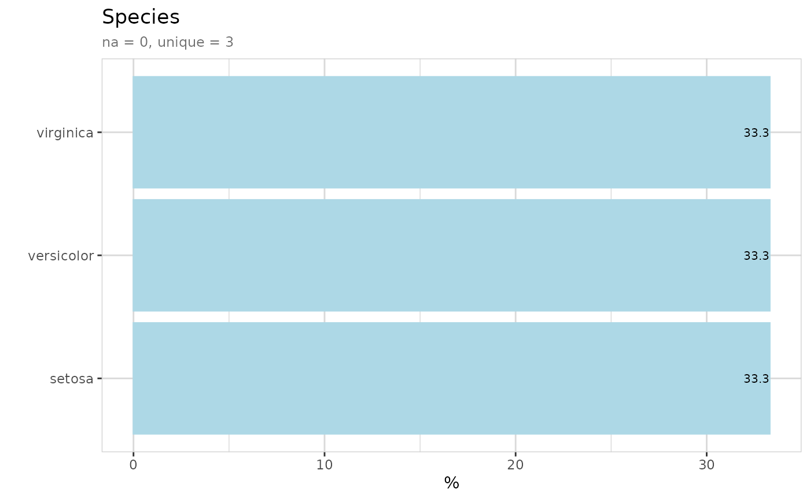
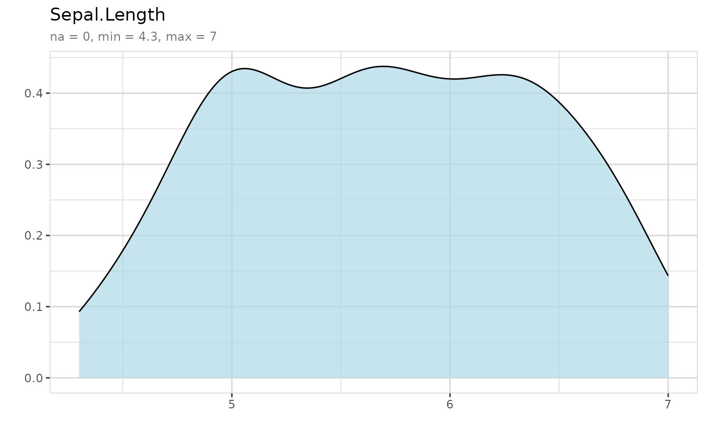
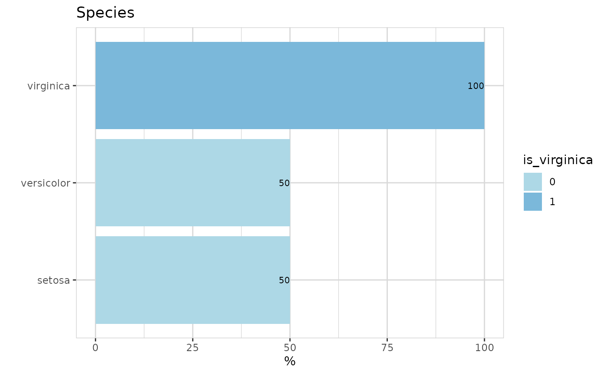
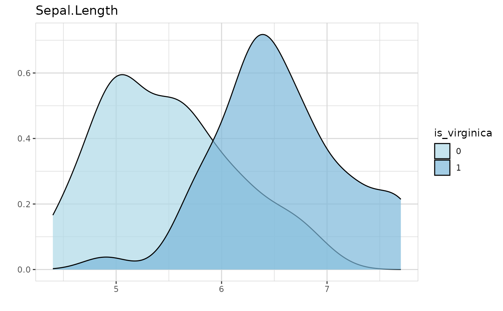
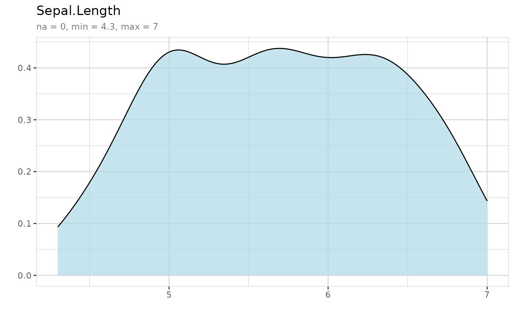
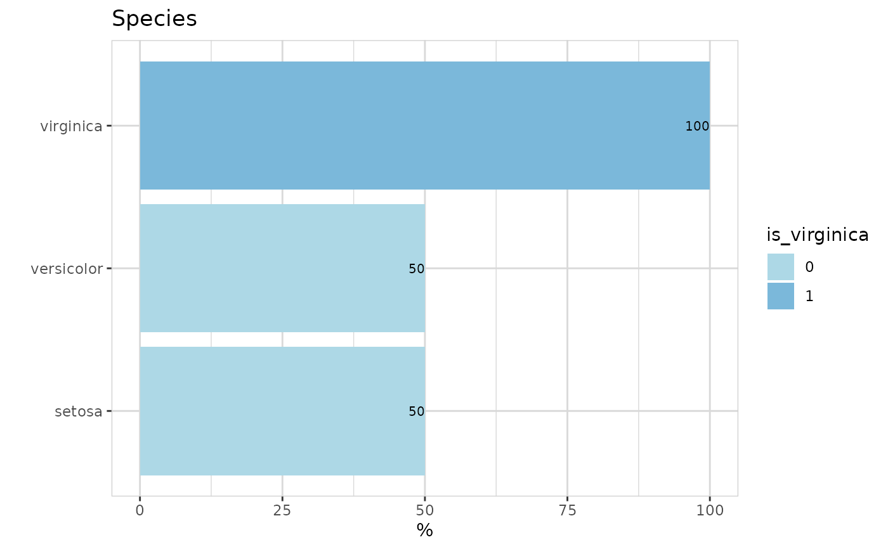
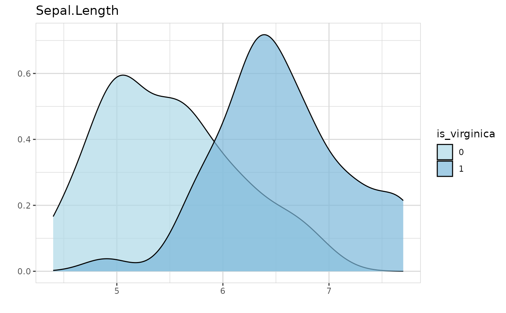

Explore a dataset or variable
Usage
explore(
data,
var,
var2,
n,
target,
targetpct,
split,
min_val = NA,
max_val = NA,
auto_scale = TRUE,
na = NA,
...
)Arguments
- data
A dataset
- var
A variable
- var2
A variable for checking correlation
- n
A Variable for number of observations (count data)
- target
Target variable (0/1 or FALSE/TRUE)
- targetpct
Plot variable as target% (FALSE/TRUE)
- split
Alternative to targetpct (split = !targetpct)
- min_val
All values < min_val are converted to min_val
- max_val
All values > max_val are converted to max_val
- auto_scale
Use 0.2 and 0.98 quantile for min_val and max_val (if min_val and max_val are not defined)
- na
Value to replace NA
- ...
Further arguments (like flip = TRUE/FALSE)
Examples
## Launch Shiny app (in interactive R sessions)
if (interactive()) {
explore(iris)
}
## Explore grafically
# Load library
library(magrittr)
# Explore a variable
iris %>% explore(Species)

iris %>% explore(Sepal.Length)
 iris %>% explore(Sepal.Length, min_val = 4, max_val = 7)

# Explore a variable with a target
iris$is_virginica <- ifelse(iris$Species == "virginica", 1, 0)
iris %>% explore(Species, target = is_virginica)

iris %>% explore(Sepal.Length, target = is_virginica)

# Explore correlation between two variables
iris %>% explore(Species, Petal.Length)
iris %>% explore(Sepal.Length, Petal.Length)
# Explore correlation between two variables and split by target
iris %>% explore(Sepal.Length, Petal.Length, target = is_virginica)
iris %>% explore(Sepal.Length, min_val = 4, max_val = 7)

# Explore a variable with a target
iris$is_virginica <- ifelse(iris$Species == "virginica", 1, 0)
iris %>% explore(Species, target = is_virginica)

iris %>% explore(Sepal.Length, target = is_virginica)

# Explore correlation between two variables
iris %>% explore(Species, Petal.Length)
iris %>% explore(Sepal.Length, Petal.Length)
# Explore correlation between two variables and split by target
iris %>% explore(Sepal.Length, Petal.Length, target = is_virginica)